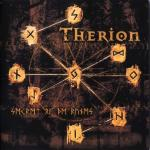

|
|
||
Therion : Secret of the Runes (2001) |
|

http://www.megatherion.com |
1. Ginnungagap 6:09 |
8.5/10 |
|
Muy lejos ya del black/death metal de sus primeros trabajos, Therion vuelve a lanzar un álbum que combina heavy metal, música clásica, voces masculinas y femeninas, coros y teclados y que recorre los mitos del legendario universo nórdico. Un viaje por el árbol del mundo, Yggdrasil, y los nueve mundos que surgen de él, representados cada uno por una canción (pistas dos a la diez). La primera canción cuenta el origen del universo y la duodécima, la conclusión, habla del poder secreto de las runas, revelado a Odin tras pasar nueve días y nueve noches colgado de Yggdrasil. En mi copia además se incluyen dos bonus tracks, versiones de canciones de Scorpions ("Crying Days") y Abba ("Summernight City"). Han participado en la grabación de este álbum, además de la propia banda, tres solistas vocales (una soprano, una alto y un tenor-barítono), un coro de ocho personas, seis músicos tocando instrumentos de cuerda, tres de viento de madera y cuatro con metales. La producción es excelente en todos los aspectos. La grabación ha sido perfecta y todos los instrumentos, solistas y coros suenan perfectamente compenetrados y orquestados. La versión en digipack, la que tengo aquí delante, es muy elegante y tanto la portada como la contraportada presentan en relieve los símbolos rúnicos. El libreto con las letras está muy cuidado: cada canción tiene su propia imagen, perfectamente acorde con su tema. Además de las letras, en cada canción hay textos explicando algo más sobre su contenido. Algo que se agradece sobre todo en las canciones en sueco :-). "Ginnungagap" es el agujero negro de donde surgió el universo y al que todo regresará. Guitarras cortantes combinadas con coros y sonidos clásicos cargados de fuerza. Un excelente trabajo vocal y un estribillo que aparece tras un explosivo cambio de ritmo y que demuestra la influencia de la ópera clásica en la música de Therion. "Midgård" es el reino de los hombres. Ritmo más lento, preponderancia de la voz femenina y coros más pausados. Las guitarras son menos potentes, la melodía más suave. Sin embargo hacia el final, aparece un explosivo solo de guitarra. "Asgård" es la morada de los dioses. Riffs más contundentes y de nuevo un variado y fantástico trabajo vocal. Auténtico metal en las partes instrumentales. "Jotunheim" es el hogar de los gigantes del caos. Las voces masculinas asumen el protagonismo. "Schwarzalbenheim" es el mundo subterráneo, hogar de los enanos y los elfos negros, los herreros. Ritmo más rápido, riffs más oscuros y potentes, voces más tenebrosas. Curiosamente las letras de esta canción están en alemán. Al final hay una elegante parte instrumental, a base de cuerdas e instrumentos de viento. "Ljusalfheim" es lo opuesto a "Schwarzalbenheim". El mundo de los elfos y las hadas. Seres brillantes pero traviesos. Las guitarras acústicas llevan el peso de los riffs en esta canción. Las voces cantan en tonos más altos. "Muspelheim" describe el mundo del sur, del calor, de la destrucción y de Surt, el gigante de fuego. Riffs rápidos, con un cierto aire de power metal, violines presurosos, y diálogos veloces. "Nifelheim" habla del mundo del norte, del hielo, donde la semilla de la vida yace enterrada. Esta es la única canción del disco donde se puede oir, poco, una voz desgarrada estilo death metal. "Vanaheim" son las tierras fértiles junto al mar. Violines alegres y guitarras brillantes. Un rapidísimo solo de guitarra cierra esta canción. "Helheim" es el mundo de la diosa de la muerte y la satisfacción. Ritmo moderado y perfecta compenetración entre voces masculinas y femeninas. "Secret of the Runes" cuenta el secreto de las runas, escritos místicos cargados de poder si se saben entender. Las guitarras, alegres, llevan el ritmo de esta canción, que musicalmente quizás sea la que más se acerca al metal de siempre, aunque los coros y las voces, sean del mismo estilo que en el resto del álbum. Cierran el disco un par de curiosas versiones de canciones de Scorpions y, ¡de Abba! Dónde vamos a ir a parar... ;-) |
||
Rubén Béjar |
||